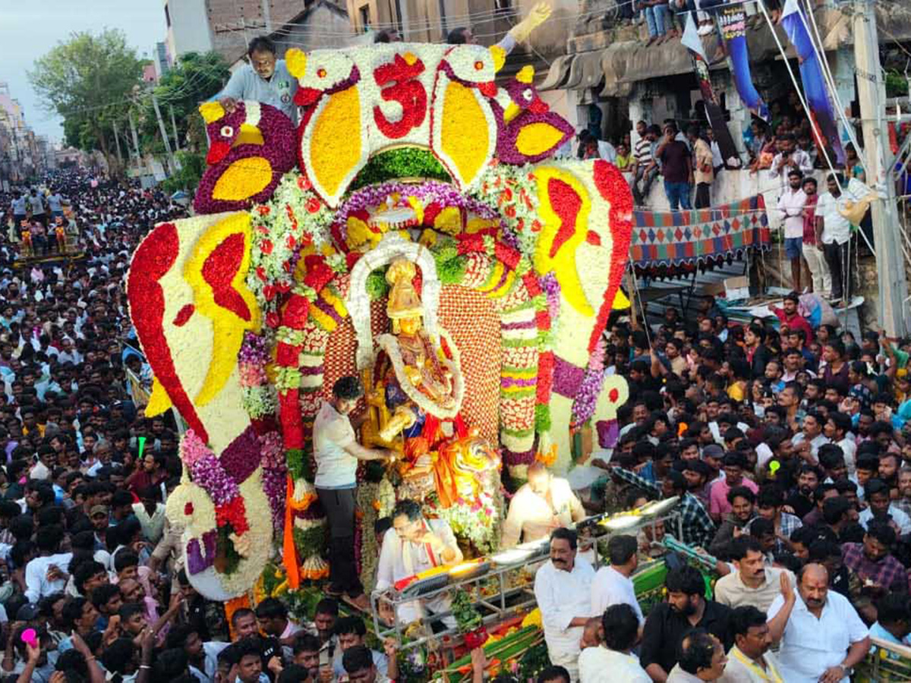
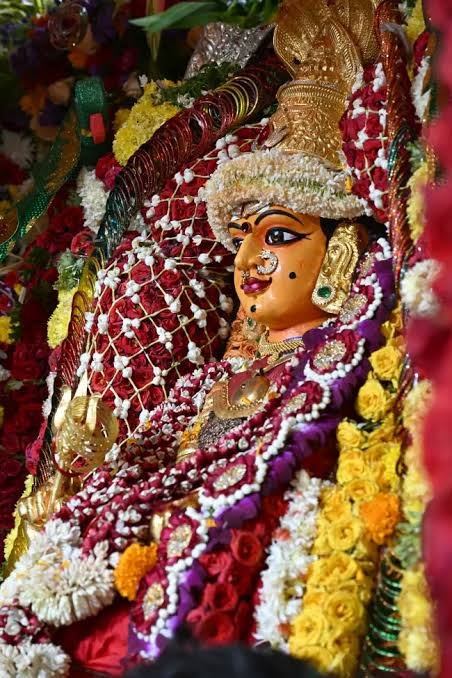

Dear Friends, you are cordially invited to my home to witness the divine splendor of Ammavaru, feel the ground shake to thunderous dappulu beats, and immerse yourselves in the grandest town carnival together!
Celebrated with unmatched fervor, our village Grama Devatha Tirunalla unites lakhs of devotees.
Elevated to an official Andhra Pradesh State Festival (రాష్ట్ర పండుగ) for the past 2 years, honoring our rich cultural heritage and sacred village traditions on the state map.
Our village goddess is the beloved mother and protector of our soil, farming fields, and community, showering health, prosperity, and peace upon all devotees.
Experience traditional Puli Veshalu, vibrant Kolatam, Thappeta Gullu, and non-stop Teenmaar dappu beats reverberating through every street under golden lights.
Plan your arrival in advance so you don't miss any of the sacred traditions and high-energy celebrations.
The grand celebration officially begins with soulful devotional music, folk performances, sacred nadaswaram melodies, and thunderous melam beats announcing Ammavaru's festival to all surrounding villages.
The sacred clay idol of Ammavaru is installed with deep reverence amid Vedic chants, special abhishekams, intense Kumkumarchana, and celestial alankaram. Devotees offer tender coconut water and neem garlands.
The climax of the festival! Ammavaru moves gracefully across all town streets on a grandly decorated chariot. Surrounded by a massive sea of devotees, rhythmic dappulu, vibrant fireworks, and flower showers.
Community Annadanam across festival complexes, combined with warm home-cooked Andhra delicacies, traditional sweets, and festive meals prepared round-the-clock at my home.
The entire town turns into a dazzling festival carnival with rides, street bazaars, and endless energy.
Massive Zaint Wheels illuminated against the night sky, giving spectacular panoramic views of our village.
Exciting high-swinging pirate ship rides, dragon coasters, and fun amusement zones for everyone to enjoy.
Brightly lit street stalls selling colorful lacquer bangles, brass lamps, festive toys, and handmade crafts.
Fresh piping hot jalebis, Mysore pak, bellam appalu, spicy puffed rice mixture, and sweet sugarcane juice.
Pounding native drums and electric folk beats keeping everyone dancing on the streets through the night.
Relax, recharge, and catch up with old friends right at my home between the morning rituals and night fair rounds.
Catch a glimpse of the devotion, the colors, and the sheer scale of our village festival celebrations.


The spiritual center at the temple and your comfortable guest accommodation at my home.
Main Sanctum & Procession Starting Point
Rooms, Feast & Parking Arranged for Friends
I am organizing rooms, food, and special darshan guidance for our friends. Please fill out this quick form so I can keep everything ready before you arrive!